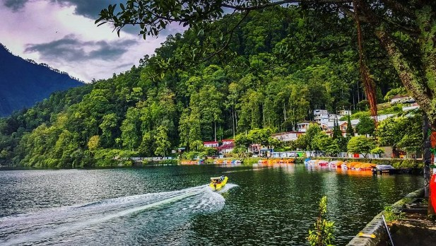

Keindahan Telaga Sarangan dan Kisah Legenda yang Melegenda
Selasa, 20 November 2024
by Eling Anggie Trikunari
Telaga Sarangan, terletak di lereng Gunung Lawu, Kabupaten Magetan, Jawa Timur, menjadi salah satu tujuan wisata favorit yang menawarkan panorama alam yang memukau. Dikelilingi oleh pegunungan hijau dan udara yang sejuk, tempat ini menjadi pilihan tepat untuk berlibur. Namun, selain keindahannya, Telaga Sarangan menyimpan legenda mistis yang mengundang rasa penasaran banyak orang.
Legenda Asal-Usul Telaga Sarangan
Menurut cerita rakyat, Telaga Sarangan terbentuk dari kisah sepasang petani, Kyai Pasir dan Nyai Pasir, yang berubah menjadi naga setelah memakan telur misterius. Dalam perjalanan mereka meninggalkan desa, tubuh mereka menciptakan lubang besar yang akhirnya dipenuhi air, membentuk telaga. Hingga kini, legenda ini menjadi bagian tak terpisahkan dari daya tarik Telaga Sarangan.
Pesona Mistis Telaga Sarangan
- Larangan Bersikap Sombong: Pengunjung dilarang bersikap tidak sopan di sekitar telaga. Konon, mereka yang melanggar aturan ini akan mendengar suara-suara aneh atau mengalami kejadian mistis.
- Penampakan Naga: Beberapa pengunjung mengaku melihat bayangan naga di permukaan air, yang diyakini sebagai perwujudan Kyai dan Nyai Pasir.
- Energi Spiritual: Telaga ini dipercaya memiliki aura magis yang membuat banyak orang merasa lebih tenang saat berada di sini.
Daya Tarik Wisata Telaga Sarangan
Selain kisah mistisnya, Telaga Sarangan menawarkan berbagai aktivitas menarik:
- Berkeliling Telaga: Wisatawan dapat menikmati keindahan telaga dengan menyewa perahu motor.
- Berkuda: Pengalaman seru berkuda di sekitar kawasan telaga.
- Wisata Kuliner: Cobalah sate kelinci, makanan khas yang populer di sini.
Tradisi Larung Sesaji
Setiap tahun, masyarakat setempat menggelar upacara "Larung Sesaji" sebagai bentuk rasa syukur dan penghormatan terhadap legenda Kyai dan Nyai Pasir. Dalam tradisi ini, berbagai sesaji dihanyutkan ke tengah telaga, menciptakan pemandangan yang penuh makna budaya.
Tips Berwisata ke Telaga Sarangan
- Pilih waktu yang tepat: Kunjungi saat pagi atau sore hari untuk suasana yang lebih nyaman.
- Bawa pakaian hangat: Suhu di sekitar telaga cukup dingin, terutama di malam hari.
- Hormati tradisi lokal: Jaga sikap dan hindari perbuatan yang tidak sopan selama berada di kawasan telaga.